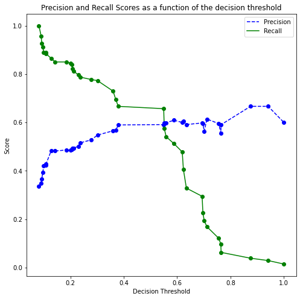
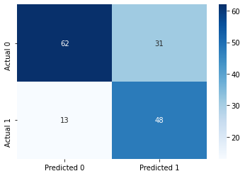

import pandas as pd
import numpy as np
import seaborn as sns
import matplotlib.pyplot as plt
from sklearn.metrics import mean_squared_error
from sklearn.model_selection import cross_val_score,train_test_split
from sklearn.metrics import roc_curve, precision_recall_curve, auc, make_scorer, recall_score, accuracy_score, precision_score, confusion_matrix
from sklearn.model_selection import StratifiedKFold, KFold
from sklearn.tree import DecisionTreeClassifier
from sklearn.model_selection import GridSearchCV
#Libraries for visualizing trees
from sklearn.tree import export_graphviz
from six import StringIO
from IPython.display import Image
import pydotplus
import time as time4 Classification trees
Read section 8.1.2 of the book before using these notes.
Note that in this course, lecture notes are not sufficient, you must read the book for better understanding. Lecture notes are just implementing the concepts of the book on a dataset, but not explaining the concepts elaborately.
train = pd.read_csv('./Datasets/diabetes_train.csv')
test = pd.read_csv('./Datasets/diabetes_test.csv')test.head()| Pregnancies | Glucose | BloodPressure | SkinThickness | Insulin | BMI | DiabetesPedigreeFunction | Age | Outcome | |
|---|---|---|---|---|---|---|---|---|---|
| 0 | 6 | 148 | 72 | 35 | 0 | 33.6 | 0.627 | 50 | 1 |
| 1 | 2 | 197 | 70 | 45 | 543 | 30.5 | 0.158 | 53 | 1 |
| 2 | 1 | 115 | 70 | 30 | 96 | 34.6 | 0.529 | 32 | 1 |
| 3 | 8 | 99 | 84 | 0 | 0 | 35.4 | 0.388 | 50 | 0 |
| 4 | 7 | 147 | 76 | 0 | 0 | 39.4 | 0.257 | 43 | 1 |
4.1 Building a classification tree
Develop a classification tree to predict if a person has diabetes.
X = train.drop(columns = 'Outcome')
Xtest = test.drop(columns = 'Outcome')
y = train['Outcome']
ytest = test['Outcome']#Defining the object to build a regression tree
model = DecisionTreeClassifier(random_state=1, max_depth=3)
#Fitting the regression tree to the data
model.fit(X, y)DecisionTreeClassifier(max_depth=3, random_state=1)#Visualizing the regression tree
dot_data = StringIO()
export_graphviz(model, out_file=dot_data,
filled=True, rounded=True,
feature_names =X.columns,precision=2)
graph = pydotplus.graph_from_dot_data(dot_data.getvalue())
#graph.write_png('car_price_tree.png')
Image(graph.create_png())
# Performance metrics computation
#Computing the accuracy
y_pred = model.predict(Xtest)
print("Accuracy: ",accuracy_score(y_pred, ytest)*100)
#Computing the ROC-AUC
y_pred_prob = model.predict_proba(Xtest)[:,1]
fpr, tpr, auc_thresholds = roc_curve(ytest, y_pred_prob)
print("ROC-AUC: ",auc(fpr, tpr))# AUC of ROC
#Computing the precision and recall
print("Precision: ", precision_score(ytest, y_pred))
print("Recall: ", recall_score(ytest, y_pred))
#Confusion matrix
cm = pd.DataFrame(confusion_matrix(ytest, y_pred), columns=['Predicted 0', 'Predicted 1'],
index = ['Actual 0', 'Actual 1'])
sns.heatmap(cm, annot=True, cmap='Blues', fmt='g');Accuracy: 73.37662337662337
ROC-AUC: 0.8349197955226512
Precision: 0.7777777777777778
Recall: 0.459016393442622964.2 Optimizing hyperparameters to optimize performance
In case of diabetes, it is important to reduce FNR (False negative rate) or maximize recall. This is because if a person has diabetes, the consequences of predicting that they don’t have diabetes can be much worse than the other way round.
Let us find the optimal depth of the tree and the number of terminal nods (leaves) that minimizes the FNR or mazimizes recall.
Find the maximum values of depth and number of leaves.
#Defining the object to build a regression tree
model = DecisionTreeClassifier(random_state=1)
#Fitting the regression tree to the data
model.fit(X, y)DecisionTreeClassifier(random_state=1)# Maximum number of leaves
model.get_n_leaves()118# Maximum depth
model.get_depth()14#Defining parameters and the range of values over which to optimize
param_grid = {
'max_depth': range(2,14),
'max_leaf_nodes': range(2,118),
'max_features': range(3, 8)
}#Grid search to optimize parameter values
start_time = time.time()
skf = StratifiedKFold(n_splits=5)#The folds are made by preserving the percentage of samples for each class.
#Minimizing FNR is equivalent to maximizing recall
grid_search = GridSearchCV(DecisionTreeClassifier(random_state=1), param_grid, scoring=['precision','recall'],
refit="recall", cv=skf, n_jobs=-1, verbose = True)
grid_search.fit(X, y)
# make the predictions
y_pred = grid_search.predict(Xtest)
print('Best params for recall')
print(grid_search.best_params_)
print("Time taken =", round((time.time() - start_time)), "seconds")Fitting 5 folds for each of 8352 candidates, totalling 41760 fits
Best params for recall
{'max_depth': 5, 'max_features': 8, 'max_leaf_nodes': 6}
Time taken = 40 seconds4.3 Optimizing the decision threshold probability
Note that decision threshold probability is not tuned with GridSearchCV because GridSearchCV is a technique used for hyperparameter tuning in machine learning models, and the decision threshold probability is not a hyperparameter of the model.
The decision threshold is set to 0.5 by default during hyperparameter tuning with GridSearchCV.
GridSearchCV is used to tune hyperparameters that control the internal settings of a machine learning model, such as learning rate, regularization strength, and maximum tree depth, among others. These hyperparameters affect the model’s internal behavior and performance. On the other hand, the decision threshold is an external parameter that is used to interpret the model’s output and make predictions based on the predicted probabilities.
To tune the decision threshold, one typically needs to manually adjust it after the model has been trained and evaluated using a specific set of hyperparameter values. This can be done using methods, which involve evaluating the model’s performance at different decision threshold values and selecting the one that best meets the desired trade-off between false positives and false negatives based on the specific problem requirements.
As the recall will always be 100% for a decision threshold probability of zero, we’ll find a decision threshold probability that balances recall with another performance metric such as precision, false positive rate, accuracy, etc. Below are a couple of examples that show we can balance recall with (1) precision or (2) false positive rate.
4.3.1 Balancing recall with precision
We can find a threshold probability that balances recall with precision.
model = DecisionTreeClassifier(random_state=1, max_depth = 5, max_leaf_nodes=6, max_features=8).fit(X, y)
ypred = model.predict_proba(X)[:,1]
p, r, thresholds = precision_recall_curve(y, ypred)
def plot_precision_recall_vs_threshold(precisions, recalls, thresholds):
plt.figure(figsize=(8, 8))
plt.title("Precision and Recall Scores as a function of the decision threshold")
plt.plot(thresholds, precisions[:-1], "b--", label="Precision")
plt.plot(thresholds, recalls[:-1], "g-", label="Recall")
plt.plot(thresholds, precisions[:-1], "o", color = 'blue')
plt.plot(thresholds, recalls[:-1], "o", color = 'green')
plt.ylabel("Score")
plt.xlabel("Decision Threshold")
plt.legend(loc='best')
plt.legend()
plot_precision_recall_vs_threshold(p, r, thresholds)
# Thresholds with precision and recall
np.concatenate([thresholds.reshape(-1,1), p[:-1].reshape(-1,1), r[:-1].reshape(-1,1)], axis = 1)array([[0.05263158, 0.33713355, 1. ],
[0.12686567, 0.35590278, 0.99033816],
[0.28358209, 0.55519481, 0.82608696],
[0.35897436, 0.63070539, 0.73429952],
[0.58441558, 0.68316832, 0.66666667],
[0.744 , 0.744 , 0.44927536]])Suppose, we wish to have at least 80% recall, with the highest possible precision. Then, based on the precision-recall curve, we should have a decision threshold probability of 0.28.
Let’s assess the model’s performance on test data with a threshold probability of 0.28.
# Performance metrics computation for the optimum decision threshold probability
desired_threshold = 0.23
y_pred_prob = model.predict_proba(Xtest)[:,1]
# Classifying observations in the positive class (y = 1) if the predicted probability is greater
# than the desired decision threshold probability
y_pred = y_pred_prob > desired_threshold
y_pred = y_pred.astype(int)
#Computing the accuracy
print("Accuracy: ",accuracy_score(y_pred, ytest)*100)
#Computing the ROC-AUC
fpr, tpr, auc_thresholds = roc_curve(ytest, y_pred_prob)
print("ROC-AUC: ",auc(fpr, tpr))# AUC of ROC
#Computing the precision and recall
print("Precision: ", precision_score(ytest, y_pred))
print("Recall: ", recall_score(ytest, y_pred))
#Confusion matrix
cm = pd.DataFrame(confusion_matrix(ytest, y_pred),
columns=['Predicted 0', 'Predicted 1'], index = ['Actual 0', 'Actual 1'])
sns.heatmap(cm, annot=True, cmap='Blues', fmt='g');Accuracy: 75.97402597402598
ROC-AUC: 0.825753569539926
Precision: 0.6538461538461539
Recall: 0.83606557377049184.3.2 Balancing recall with false positive rate
Suppose we wish to balance recall with false positive rate. We can optimize the model to maximize ROC-AUC, and then choose a point on the ROC-curve that balances recall with the false positive rate.
# Defining parameters and the range of values over which to optimize
param_grid = {
'max_depth': range(2,14),
'max_leaf_nodes': range(2,118),
'max_features': range(3, 9)
}#Grid search to optimize parameter values
start_time = time.time()
skf = StratifiedKFold(n_splits=5)#The folds are made by preserving the percentage of samples for each class.
#Minimizing FNR is equivalent to maximizing recall
grid_search = GridSearchCV(DecisionTreeClassifier(random_state=1), param_grid, scoring=['precision','recall',
'roc_auc'], refit="roc_auc", cv=skf, n_jobs=-1, verbose = True)
grid_search.fit(X, y)
# make the predictions
y_pred = grid_search.predict(Xtest)
print('Best params for recall')
print(grid_search.best_params_)
print("Time taken =", round((time.time() - start_time)), "seconds")Fitting 5 folds for each of 8352 candidates, totalling 41760 fits
Best params for recall
{'max_depth': 4, 'max_features': 8, 'max_leaf_nodes': 9}
Time taken = 61 secondsmodel = DecisionTreeClassifier(random_state=1, max_depth = 4, max_leaf_nodes=9, max_features=8).fit(X, y)ypred = model.predict_proba(X)[:,1]
fpr, tpr, auc_thresholds = roc_curve(y, ypred)
print(auc(fpr, tpr))# AUC of ROC
def plot_roc_curve(fpr, tpr, label=None):
plt.figure(figsize=(8,8))
plt.title('ROC Curve')
plt.plot(fpr, tpr, linewidth=2, label=label)
plt.plot(fpr, tpr, 'o', color = 'blue')
plt.plot([0, 1], [0, 1], 'k--')
plt.axis([-0.005, 1, 0, 1.005])
plt.xticks(np.arange(0,1, 0.05), rotation=90)
plt.xlabel("False Positive Rate")
plt.ylabel("True Positive Rate (Recall)")
fpr, tpr, auc_thresholds = roc_curve(y, ypred)
plot_roc_curve(fpr, tpr)0.8311137224180702
# Thresholds with TPR and FPR
np.concatenate([auc_thresholds.reshape(-1,1), tpr.reshape(-1,1), fpr.reshape(-1,1)], axis = 1)array([[1.89583333, 0. , 0. ],
[0.89583333, 0.20772947, 0.01228501],
[0.75 , 0.41062802, 0.04668305],
[0.58441558, 0.62801932, 0.12530713],
[0.38095238, 0.66666667, 0.15724816],
[0.37037037, 0.71497585, 0.1990172 ],
[0.35897436, 0.7826087 , 0.26044226],
[0.28358209, 0.87439614, 0.37837838],
[0.09958506, 0.99033816, 0.91154791],
[0.05263158, 1. , 1. ]])Suppose, we wish to have at least 80% recall, with the lowest possible precision. Then, based on the ROC-AUC curve, we should have a decision threshold probability of 0.28.
Let’s assess the model’s performance on test data with a threshold probability of 0.28.
# Performance metrics computation for the optimum decision threshold probability
desired_threshold = 0.28
y_pred_prob = model.predict_proba(Xtest)[:,1]
# Classifying observations in the positive class (y = 1) if the predicted probability is greater
# than the desired decision threshold probability
y_pred = y_pred_prob > desired_threshold
y_pred = y_pred.astype(int)
#Computing the accuracy
print("Accuracy: ",accuracy_score(y_pred, ytest)*100)
#Computing the ROC-AUC
fpr, tpr, auc_thresholds = roc_curve(ytest, y_pred_prob)
print("ROC-AUC: ",auc(fpr, tpr))# AUC of ROC
#Computing the precision and recall
print("Precision: ", precision_score(ytest, y_pred))
print("Recall: ", recall_score(ytest, y_pred))
#Confusion matrix
cm = pd.DataFrame(confusion_matrix(ytest, y_pred),
columns=['Predicted 0', 'Predicted 1'], index = ['Actual 0', 'Actual 1'])
sns.heatmap(cm, annot=True, cmap='Blues', fmt='g');Accuracy: 75.32467532467533
ROC-AUC: 0.8421470121628767
Precision: 0.6385542168674698
Recall: 0.8688524590163934
4.4 Cost complexity pruning
Just as we did cost complexity pruning in a regression tree, we can do it to optimize the model for a classification tree.
model = DecisionTreeClassifier(random_state = 1)#model without any restrictions
path= model.cost_complexity_pruning_path(X,y)# Compute the pruning path during Minimal Cost-Complexity Pruning.alphas=path['ccp_alphas']
len(alphas)58#Grid search to optimize parameter values
skf = StratifiedKFold(n_splits=5)
grid_search = GridSearchCV(DecisionTreeClassifier(random_state = 1), param_grid = {'ccp_alpha':alphas},
scoring=['precision','recall','accuracy'],
refit="recall", cv=skf, n_jobs=-1, verbose = True)
grid_search.fit(X, y)
# make the predictions
y_pred = grid_search.predict(Xtest)
print('Best params for recall')
print(grid_search.best_params_)Fitting 5 folds for each of 58 candidates, totalling 290 fits
Best params for recall
{'ccp_alpha': 0.010561291712538737}# Model with the optimal value of 'ccp_alpha'
model = DecisionTreeClassifier(ccp_alpha=0.01435396,random_state=1)
model.fit(X, y)DecisionTreeClassifier(ccp_alpha=0.01435396, random_state=1)Now we can tune the decision threshold probability to balance recall with another performance metrics as shown earlier in Section 4.3.